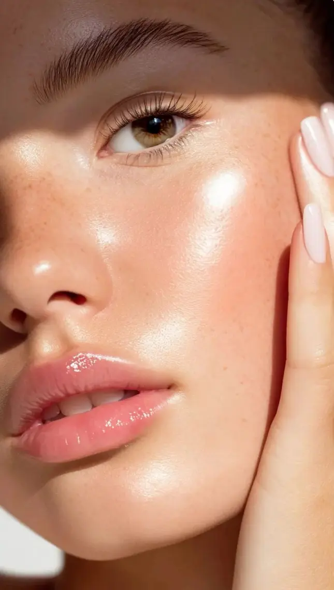

What Is Glass Skin — and Can a Facial Give It to You?
By the POINT · FACE expert therapists · Uluwatu, Bali

The short answer
Glass skin is a Korean beauty term for skin so hydrated, smooth and clear that it looks translucent and reflects light like glass. It rests on three pillars: deep hydration, refined texture (clean pores, no build-up) and a healthy barrier. A Korean Hydrafacial delivers all three in one session — the glow is visible immediately and lasts about a week.
Key takeaways
- Glass skin = hydrated, refined, luminous, clear skin.
- Three pillars: hydration, texture, barrier.
- Our Ultimate Korean Glass Skin & Hydralift: 18+ steps, 80 min.
- Keep it with layered hydration and daily SPF.
Where does "glass skin" come from?
The term comes from Korea, where skincare focuses on prevention and hydration rather than coverage. Glass skin is not a filter or a make-up look — it is skin in excellent condition: plump with water, smooth, even and luminous.
The 3 pillars of glass skin
- Hydration — humectants such as hyaluronic acid and snail mucin plump the skin so it reflects light.
- Texture — clean, refined pores and no dead-cell build-up for a smooth surface.
- Barrier — centella, peptides and propolis keep the skin calm and able to hold water.
How our glass-skin facial works
The Ultimate Korean Glass Skin & Hydralift is our signature 80-minute protocol with 18+ steps: double cleansing, hydrodermabrasion, extraction, ultrasonic infusion of a 6-peptide booster, snail mucin and hyaluronic acid, oxygen therapy, high frequency, cold hammer, red & green LED and a hydrogel mask. Features COSRX, SKIN1004 and Beauty of Joseon.
How to keep it
- Layer light hydration: toner, essence, serum, moisturiser.
- Exfoliate gently once or twice a week.
- SPF 50 every day — the most important anti-dullness step in Bali.
More in dull skin & glass skin.
FAQ
How long does the glass-skin effect last?
About 5–7 days after one session. A series of 3 facials changes texture and hydration for longer.